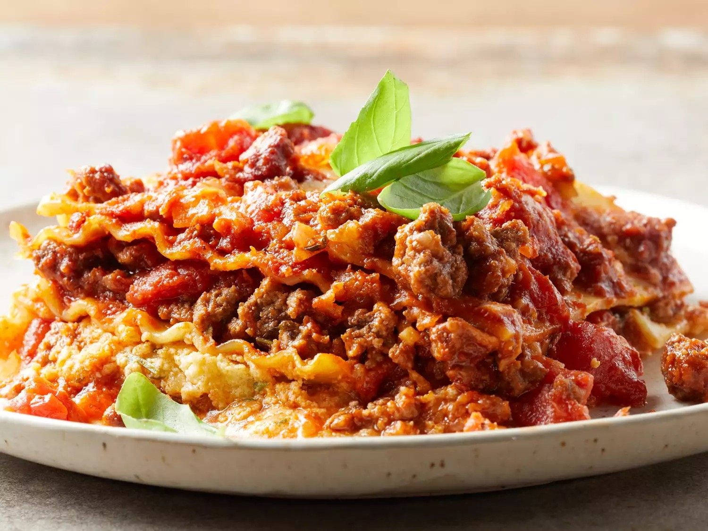

Lasagna

Description
Making this lasagna recipe a day ahead and refrigerating overnight allows the spices to meld and gives it exceptional flavor.
Ingredients:
Original recipe (1X) yields 8 servings
- 1 ½ pounds lean ground beef
- 1 onion, chopped
- 2 cloves garlic, minced
- 1 (29 ounce) can diced tomatoes
- 2 (6 ounce) cans tomato paste
- 2 tablespoons brown sugar
- 1 tablespoon chopped fresh basil
- 2 ½ teaspoons salt, divided
- 1 teaspoon dried oregano
- 12 dry lasagna noodles
- 1 pint part-skim ricotta cheese
- ½ cup grated Parmesan cheese
- 2 large eggs, beaten
- 2 tablespoons dried parsley
- 1 pound mozzarella cheese, shredded
- 2 tablespoons grated Parmesan cheese
Steps:
- Gather all ingredients.
:max_bytes(150000):strip_icc():format(webp)/JF_11729_AmericanLasagna_Shot1_14438-c7180efb85154b679e1444430d90f32b.jpg)
- Cook and stir ground beef, onion, and garlic in a large skillet over medium heat for 5 minutes; drain fat.
:max_bytes(150000):strip_icc():format(webp)/JF_11729_AmericanLasagna_Shot2_14439-06deeea9390d4fa29fe40b2326640b32.jpg)
- Mix in diced tomatoes, tomato paste, brown sugar, basil, 1 1/2 teaspoons salt, and oregano. Simmer meat sauce, stirring occasionally, for 30 to 45 minutes.
:max_bytes(150000):strip_icc():format(webp)/JF_11729_AmericanLasagna_Shot4_14479-4d9887b7646d4cf4a56d0793827c21a4.jpg)
- Preheat the oven to 375 degrees F (190 degrees C).
- Meanwhile, bring a large pot of lightly salted water to a boil. Cook lasagna noodles in boiling water, stirring occasionally, until tender yet firm to the bite, about 8 minutes; drain. Lay noodles flat on towels; blot dry.
:max_bytes(150000):strip_icc():format(webp)/JF_11729_AmericanLasagna_Shot6_14464-7338413198df429682028ca83eb248f4.jpg)
- Mix together ricotta, 1/2 cup Parmesan cheese, eggs, parsley, and remaining 1 teaspoon salt in a medium bowl.
:max_bytes(150000):strip_icc():format(webp)/JF_11729_AmericanLasagna_Shot7_14474-23c914e2c44b423e8404989f21e51587.jpg)
- Layer 1/3 of the noodles in the bottom of a 9x13-inch baking dish. Cover with 1/2 of the ricotta mixture.
:max_bytes(150000):strip_icc():format(webp)/JF_11729_AmericanLasagna_Shot9_14489-8301b309077640e28594dd5a4e1d89a1.jpg)
- Cover the ricotta mixture with 1/2 of the mozzarella cheese, and 1/3 of the meat sauce.
:max_bytes(150000):strip_icc():format(webp)/JF_11729_AmericanLasagna_Shot11_14492-d531ab9b169e46ada2e8fc7f09773d56.jpg)
- Repeat. Top with remaining noodles and meat sauce. Sprinkle 2 tablespoons Parmesan cheese over the top.
:max_bytes(150000):strip_icc():format(webp)/JF_11729_AmericanLasagna_Shot12_14493-1bcd204e6bb54b2493ed5e9050393da3.jpg)
- Bake in the preheated oven for 30 minutes. Let stand for 10 minutes before serving.
:max_bytes(150000):strip_icc():format(webp)/JF_11729_AmericanLasagna_Shot13_14562-c7b4c9a435e3409d99d285c788fc1fee.jpg)
- Enjoy!